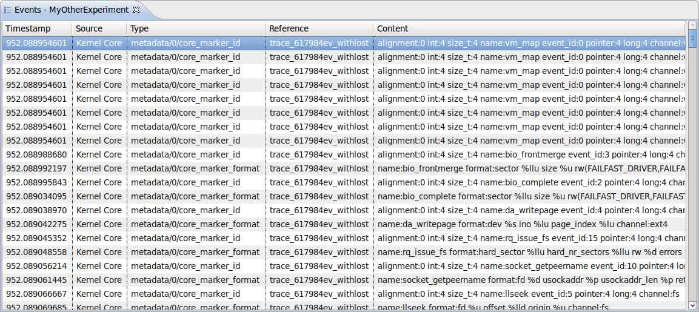

Events View
The Events views shows the basic experiment data in chronological order in
a tabular format. The following fields are displayed:
- Timestamp: the event timestamp
- Source: the component that generated the event
- Type: the event type
- Reference: the trace that holds the event
- Content: the raw event content
